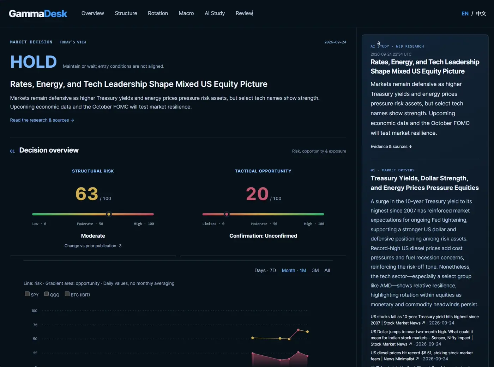

GammaDesk
A structured view of a market that never stops moving.
A bilingual research dashboard that brings macro conditions, market structure, and daily review into a single workflow. I developed the research framework, designed the interface, and built the application with AI-assisted development tools.
Research framework · Product design · Development
Next.js · Financial data APIs · OpenAI · Vercel

From scattered inputs to a daily workflow
Rates, currencies, energy, volatility, options positioning, and breadth provide different views of market conditions. GammaDesk organizes these inputs so the user can move from context to a more focused review.

Make the evidence visible
The interface combines market assessment with input coverage, research summaries, and a daily review. Data freshness and unavailable inputs matter as much as a headline score; the product makes those limitations part of the workflow.
Research meets implementation
The work spans defining requirements, integrating financial APIs, testing the interface, and deploying with GitHub and Vercel. The public repository documents methodology and synthetic examples; it is distinct from private research policies and decision records.